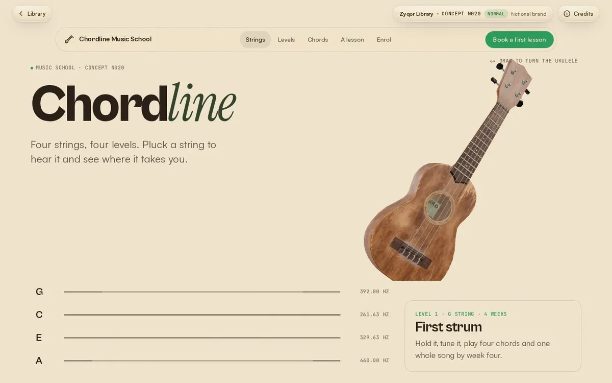
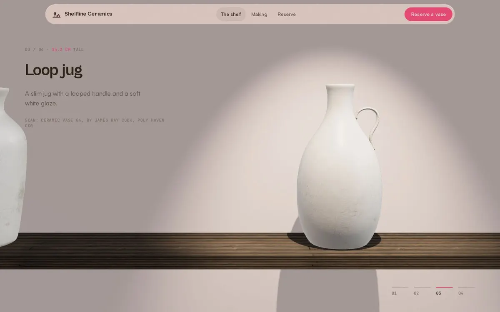
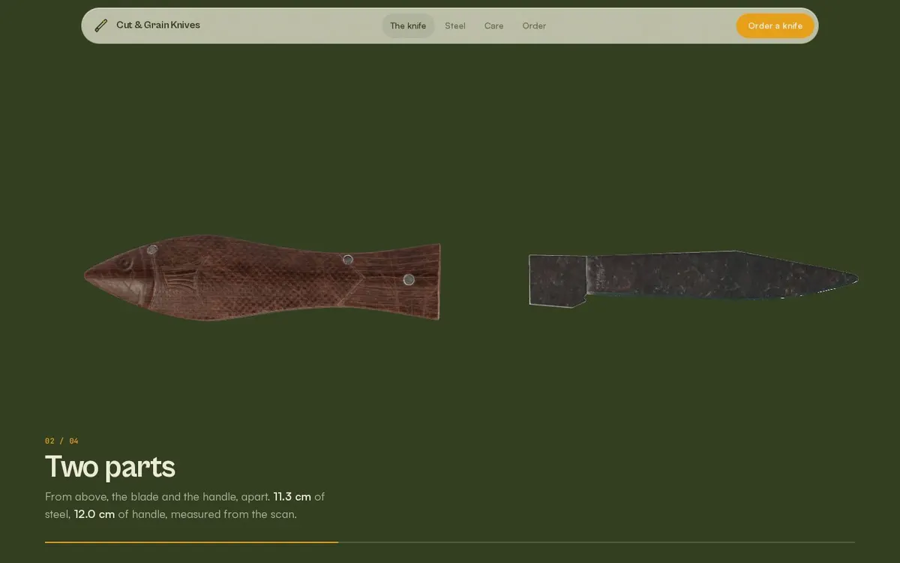
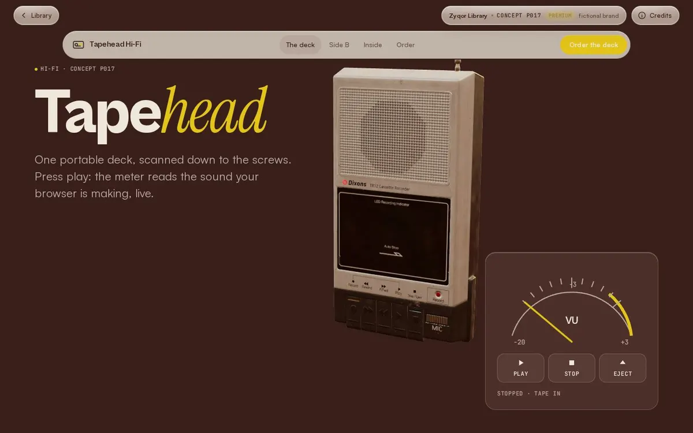

Step 01
One idea
Start with one interaction only this brand could have. For a music school, the ukulele strings are the menu: pluck one to open a page.
Component · sticky-story
Chapters scroll while the picture stays pinned; each new chapter wipes its image in, and a rail shows where you are. Built on CSS sticky, so it is smooth on phones too.
Step 01
Start with one interaction only this brand could have. For a music school, the ukulele strings are the menu: pluck one to open a page.
Step 02
No code-made placeholder shapes. Every object is a real scanned or modelled CC0 / CC-BY asset, credited next to the file.
Step 03
HDRI light, a contact shadow and one camera move tied to scroll. The motion explains the product instead of decorating it.
Step 04
The phone page loads the same model, textures and light as the desktop one. Only the layout changes, never the quality.




Copy the folder sticky-story/ (the .js and .css files) into your project. No build step and no framework.
position: sticky; JavaScript only decides which step is active (IntersectionObserver at the middle of the screen), so it never jitters.aria-current="step"; inactive frames are aria-hidden.prefers-reduced-motion: frames switch without the wipe and zoom; smooth scrolling is off.<link rel="stylesheet" href="sticky-story.css">
<div class="ss" data-sticky-story>
<div class="ss-steps">
<div class="ss-line"><div class="ss-fill"></div></div>
<article class="ss-step"><h3>One idea</h3><p>...</p></article>
<article class="ss-step"><h3>A real model</h3><p>...</p></article>
</div>
<div class="ss-media">
<div class="ss-stage">
<figure class="ss-frame"><img src="one.webp" alt=""></figure>
<figure class="ss-frame"><img src="two.webp" alt=""></figure>
<span class="ss-count"></span>
</div>
<nav class="ss-rail" aria-label="Story steps"></nav>
</div>
</div>
<script type="module" src="sticky-story.js"></script>| Option | Default | What it does |
|---|---|---|
| --ss-ratio | 16/10 | Aspect ratio of the pinned media (desktop and phone). |
| .ss-frame | one per step | Any content: image, video, canvas. The active one wipes up; earlier ones stay under it. |
| .ss-rail | optional | Numbered buttons that scroll to each step. |
| .ss-count | optional | 01 / 04 counter. |